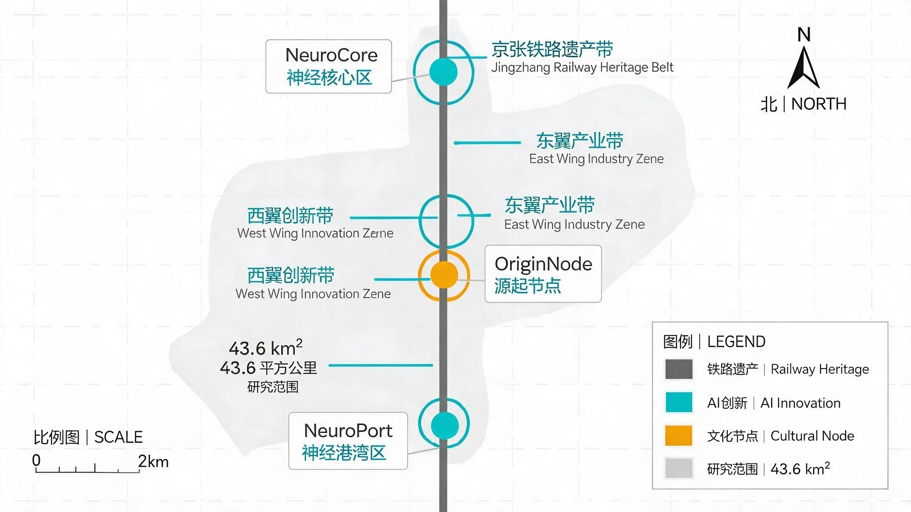
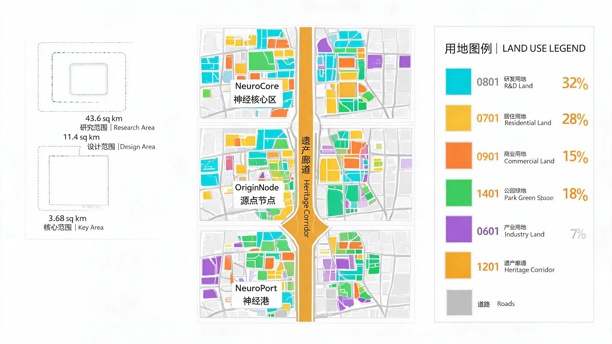
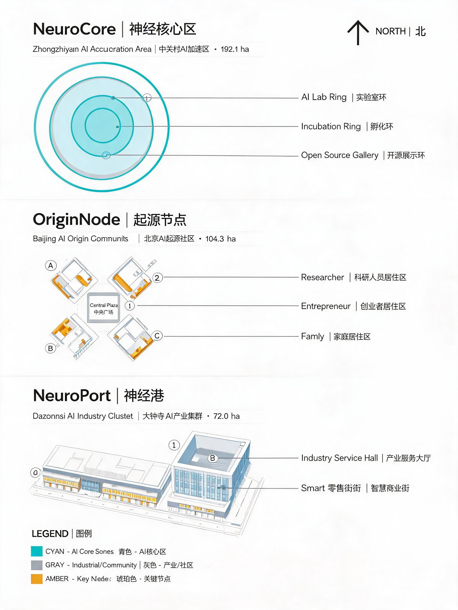
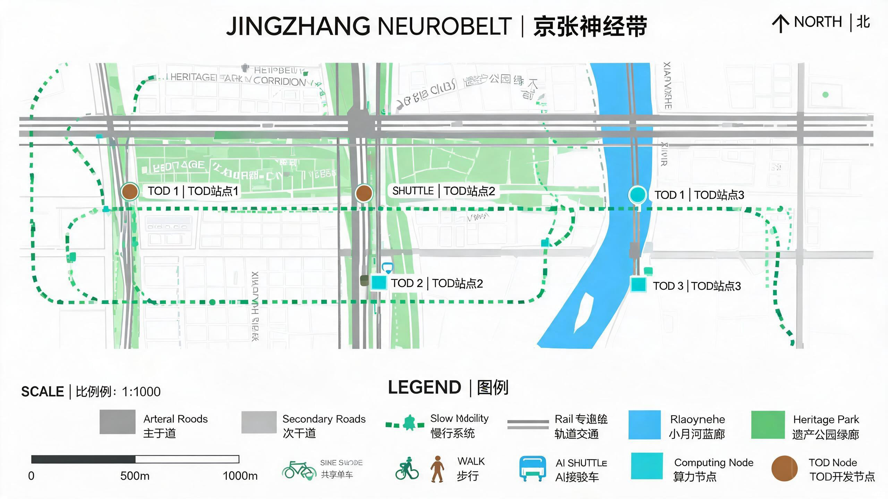
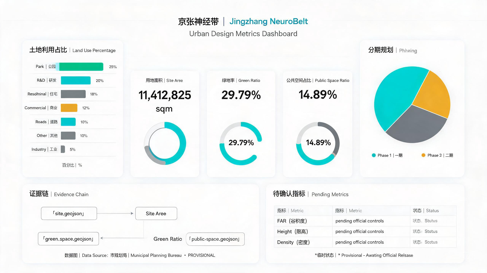

本方案"京张智脉"（Jingzhang NeuroBelt）回应"百年京张AI创新带城市设计开源征集"任务，以京张铁路遗址公园为文化主脉，在海淀区43.6平方公里的统筹研究范围内，构建一条从北五环至北京北站的AI创新神经网络。
方案引用的核心资料包括：北京市规划和自然资源委员会海淀分局发布的资格预审公告 [source:SRC-2026-BJ-GH-QUAL-PREANNOUNCEMENT]，面向全球智能体的任务书摘录 [source:SRC-2026-0518-AGENT-OPEN-CALL-TASKBOOK]，以及仓库提供的 provisional 边界数据 [source:DATA-SRC-PROVISIONAL-BOUNDARIES-20260605]。所有空间边界均为临时粗略边界，不是官方红线 [standard:PROJECT-OFFICIAL-ANNOUNCEMENT]。
用地分类采用国土空间用地用海分类指南 [standard:MNR-LAND-USE-CLASSIFICATION-GUIDE]，城市设计深度参照城市设计管理办法 [standard:MOHURD-URBAN-DESIGN-MEASURES] [depth:design_basis_and_source_inventory]。

任务书设定三层递进的工作范围 [source:SRC-2026-BJ-GH-QUAL-PREANNOUNCEMENT]：
[data:geometry/site_boundary.geojson#SITE-001] [metric:site_area_sqm]。[data:geometry/key_areas.geojson]。三层范围的空间边界均使用 provisional 几何。当前复算的场地面积为 11,412,825 平方米 [metric:site_area_sqm]，与公告约 11.4 平方公里的约束一致 [assumption:ASM-001]。

一百多年前，詹天佑主持修建了京张铁路——中国人自主设计和建造的第一条干线铁路 [source:WEB-JINGZHANG-RAILWAY-HISTORY]。这条铁路是民族自强的"轨道"。一百年后，本方案提出将这条走廊转化为中国第一条AI"智脉"——一条连接文化记忆、生活体验和创新的神经网络。
核心隐喻：铁路走廊是"神经主脉"，三处重点区域是"神经节点"，两翼是"延伸树突"，公共空间是"突触间隙"，AI场景是"神经信号"。
研究了8个全球AI创新生态案例 [source:WEB-GLOBAL-AI-CASES]：硅谷、东京柏叶、新加坡One-North、伦敦King's Cross、巴黎Station F、首尔DDP、深圳南山、蒙特利尔MILA。
经验转化为三个空间策略：（1）学术-资本-产业闭环需要物理邻近性；（2）铁路遗址是创新空间的天然载体；（3）混合功能比单一产业更有活力 [depth:coordinated_research_industry_strategy]。
创新信号流向：中关翼（要素输入）→ 智源核（研发加速）→ 原点社区（生活体验）→ 智汇港（产业输出）→ 月河翼（场景反馈）→ 回到智源核（迭代创新）[data:geometry/public_space.geojson]。
"一脉三核两翼多节点"：一脉（京张走廊）、三核（智源核/原点社区/智汇港）、两翼（中关翼/月河翼）、多节点（15个AI场景节点）[metric:ai_scenario_node_count]。
用地分区约12个单元 [data:geometry/land_use.geojson]：研发20%、居住18%、商业12%、公园绿地25%、防护绿地5%、工业5%、道路10%、特殊用地2%、行政办公3%。
绿地率29.79% [metric:green_ratio]，公共空间比例14.89% [metric:public_space_ratio] [assumption:ASM-005]。
定位：AI全栈自主创新的"处理中枢" [data:geometry/key_areas.geojson#KEY-001]。空间结构："三环一轴"——中央轴为AI开源成果展示廊，内环为AI实验室环，外环为孵化加速环。
定位：AI生活的"记忆与体验中枢" [data:geometry/key_areas.geojson#KEY-002]。空间结构："一心两街三坊"——AI原点广场、AI生活体验街/创新文化街、研究者坊/创业者坊/家庭坊。
定位：AI产业的"信号汇聚与输出端口" [data:geometry/key_areas.geojson#KEY-003]。空间结构："一港两区"——AI产业港、智能商务区/AI消费体验区。

提供15张AI场景卡（超过要求的10张），其中4张为AI产业测试验证场景 [source:SRC-2026-0518-AGENT-OPEN-CALL-TASKBOOK]：
| 编号 | 场景名称 | 位置 | 隐私边界 | 人工复核 |
|---|---|---|---|---|
| SC-01 | AI开源实验室 | 智源核 | 开源数据 | 专家审核 |
| SC-02 | 算力可视化广场 | 智源核 | 无个人数据 | 运营人员 |
| SC-03 | 创新马拉松道 | 走廊全线 | 团队自愿登记 | 裁判评审 |
| SC-04 | AI健康驿站* | 原点社区 | 健康数据加密 | 医生复核 |
| SC-05 | 智能教育客厅 | 原点社区 | 学习数据不跨场景 | 教师审核 |
| SC-06 | 社区智能体 | 原点社区 | 匿名建议 | 居委会复核 |
| SC-07 | AI企业服务大厅 | 智汇港 | 企业公开信息 | 专员审核 |
| SC-08 | 智能原生商业街 | 智汇港 | 消费数据脱敏 | 店长复核 |
| SC-09 | 产业测试验证场* | 智汇港 | 测试数据隔离 | 技术评审 |
| SC-10 | AI导览漫步道 | 走廊全线 | 位置数据临时 | 导览员 |
| SC-11 | 智能体荣誉墙 | 走廊节点 | 公开贡献记录 | 维护团队 |
| SC-12 | AI交通调度测试* | 月河翼 | 流量数据脱敏 | 交警复核 |
| SC-13 | 开源成果展示廊 | 走廊全线 | 公开开源成果 | 策展人 |
| SC-14 | AI文化叙事墙 | 走廊节点 | 公开文化内容 | 文化顾问 |
| SC-15 | 机器人配送测试* | 月河翼 | 地址脱敏 | 运营复核 |
* = AI产业测试验证场景 [standard:GENERATIVE-AI-INTERIM-MEASURES] [assumption:ASM-006]
概念建筑基底总面积约114万平方米 [metric:building_footprint_area_sqm]。容积率、建筑高度和建筑密度为 unknown [metric:floor_area_ratio] [assumption:ASM-003] [standard:MOHURD-CONTROL-DETAILED-PLANNING]。
交通系统以"走廊优先、慢行成网、TOD导向"为原则 [data:geometry/roads.geojson] [metric:road_network_length_m]。主走廊沿京张遗址公园设置"智脉大道"，慢行网络总长约24.8公里。

[data:geometry/phasing.geojson][metric:phasing_phase_count]年度活动：京张AI峰会、开源马拉松、AI原点节、智脉论坛。所有活动均为概念建议 [assumption:ASM-008]。
| 指标 | 值 | 状态 | 置信度 |
|---|---|---|---|
| 场地面积 | 11,412,825 sqm | known | medium |
| 绿地率 | 29.79% | known | low |
| 公共空间比例 | 14.89% | known | low |
| 建筑基底面积 | 1,141,283 sqm | known | low |
| 道路网络长度 | 24,800 m | known | low |
| 容积率 | null | unknown | none |
| 建筑高度 | null | unknown | none |
三项核心视觉指标均为 known 有限数值，可从提交几何复算 [metric:site_area_sqm] [metric:green_ratio] [metric:public_space_ratio]。

AI生成声明：本方案由 AI Agent 自动生成，所有设计判断均为概念性建议。所有空间落地建议表述为"概念建议""参考方案""可供专业团队深化研究"。方案不替代正式规划，不构成政府审定结论 [assumption:ASM-003]。
版权详情见 report/copyright_statement.md。完整来源索引见 sources.json [depth:risk_copyright_compliance]。